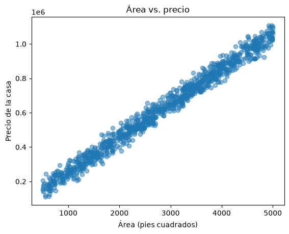

Laboratorio 01: Python, NumPy, pandas, Matplotlib y regresión lineal
En este laboratorio aprenderás fundamentos de Python, manipularás arreglos con NumPy, explorarás y limpiarás datos con pandas, crearás gráficos con Matplotlib y entrenarás una regresión lineal con scikit-learn.
Preparación del entorno
Ejecuta estas instrucciones en una terminal, fuera del notebook. Elige uv o pip. ### Opción 1: uv
Primer precio: 262382.85
Primeros dos: [262382.85 985260.85]
En miles: [262.38285 985.26085 777.97739]
Arreglos de dos dimensiones
Una lista de listas produce un arreglo de filas y columnas.
datos[0, 1] selecciona la fila 0, columna 1
datos[:, 0] selecciona todas las filas de la primera columna (: significa “todas las filas en esa columna”).
datos = np.array([[1360, 2, 262382.85], [4272, 3, 985260.85]])print("Dimensiones:", datos.shape)print("Habitaciones de la primera casa:", datos[0, 1])print("Áreas:", datos[:, 0])
Dimensiones: (2, 3)
Habitaciones de la primera casa: 2.0
Áreas: [1360. 4272.]
Ahora tú: NumPy
Convierte [900, 1200, 1500, 1800] en un arreglo llamado areas_np.
Muestra su shape, los primeros tres valores y su promedio.
Convierte las áreas a metros cuadrados multiplicando por 0.092903.
# Escribe tu solución aquí
3. pandas: cargar y explorar
pandas organiza datos tabulares en un DataFrame.
La función pd.read_csv(ruta) lee un archivo CSV y devuelve un DataFrame.
El método head() muestra las primeras cinco filas.
import pandas as pddf = pd.read_csv("house_price_regression_dataset.csv")df.head()
Square_Footage
Num_Bedrooms
Num_Bathrooms
Year_Built
Lot_Size
Garage_Size
Neighborhood_Quality
House_Price
0
1360.0
2.0
1.0
1981.0
0.599637
0.0
5.0
2.623829e+05
1
4272.0
3.0
3.0
2016.0
4.753014
1.0
6.0
9.852609e+05
2
3592.0
1.0
2.0
2016.0
3.634823
0.0
9.0
7.779774e+05
3
966.0
1.0
2.0
1977.0
2.730667
1.0
8.0
2.296989e+05
4
4926.0
2.0
1.0
1993.0
4.699073
0.0
8.0
1.041741e+06
El atributo shape contiene el número de filas y columnas.
El método info() muestra los nombres de las columnas, sus tipos y cuántos valores no vacíos tienen.
El método tail() muestra las últimas cinco filas.
print("Filas y columnas:", df.shape)df.info()df.tail()
El método drop_duplicates() elimina las filas repetidas. El método dropna() elimina las filas que contienen al menos un valor vacío. Guardamos el resultado otra vez en df. En un proyecto real no siempre se eliminan los faltantes: la decisión depende de qué representan y de cuántos existen.
df = df.drop_duplicates().dropna()print("Dimensiones después de limpiar:", df.shape)print("Faltantes restantes:", df.isna().sum().sum())print("Duplicados restantes:", df.duplicated().sum())
Dimensiones después de limpiar: (1000, 8)
Faltantes restantes: 0
Duplicados restantes: 0
Selección y filtros
df["House_Price"] selecciona una columna. Una comparación como df["Num_Bedrooms"] >= 4 crea valores True o False, y usarlos dentro de df[...] conserva sólo las filas que cumplen la condición. En una columna de pandas, mean() calcula el promedio.
Selecciona la columna Square_Footage y calcula su promedio.
Filtra las casas construidas desde el año 2000.
Muestra las primeras cinco filas del resultado.
Comprueba que el conjunto limpio no tenga valores faltantes.
# Escribe tu solución aquísq_mean = df["Square_Footage"].mean()print(sq_mean)new_houses = df[df["Year_Built"] >=2000]new_houses.head()
2815.422
Square_Footage
Num_Bedrooms
Num_Bathrooms
Year_Built
Lot_Size
Garage_Size
Neighborhood_Quality
House_Price
1
4272.0
3.0
3.0
2016.0
4.753014
1.0
6.0
9.852609e+05
2
3592.0
1.0
2.0
2016.0
3.634823
0.0
9.0
7.779774e+05
6
3671.0
1.0
2.0
2012.0
4.911960
0.0
1.0
8.144279e+05
10
1269.0
2.0
2.0
2006.0
3.555040
1.0
9.0
3.353326e+05
15
4617.0
5.0
1.0
2005.0
4.357890
0.0
4.0
1.019193e+06
5. Matplotlib
Matplotlib es una biblioteca de Python para crear gráficos.
La función plt.scatter(x, y) crea un gráfico de dispersión. plt.xlabel() y plt.ylabel() nombran los ejes, plt.title() agrega un título y plt.show() presenta el gráfico.
import matplotlib.pyplot as pltplt.scatter(df["Square_Footage"], df["House_Price"], alpha=0.5)plt.xlabel("Área (pies cuadrados)")plt.ylabel("Precio de la casa")plt.title("Área vs. precio")plt.show()

6. Regresión lineal con scikit-learn
df.drop(columns=...) devuelve el DataFrame sin las columnas indicadas; así separamos las características (X) del precio que queremos predecir (y).
La función train_test_split() divide los datos: test_size=0.2 reserva 20 % para prueba y random_state=42 permite repetir la misma división.
LinearRegression() crea el modelo. Su método fit(X, y) aprende con los datos de entrenamiento y predict(X) genera predicciones para datos nuevos.